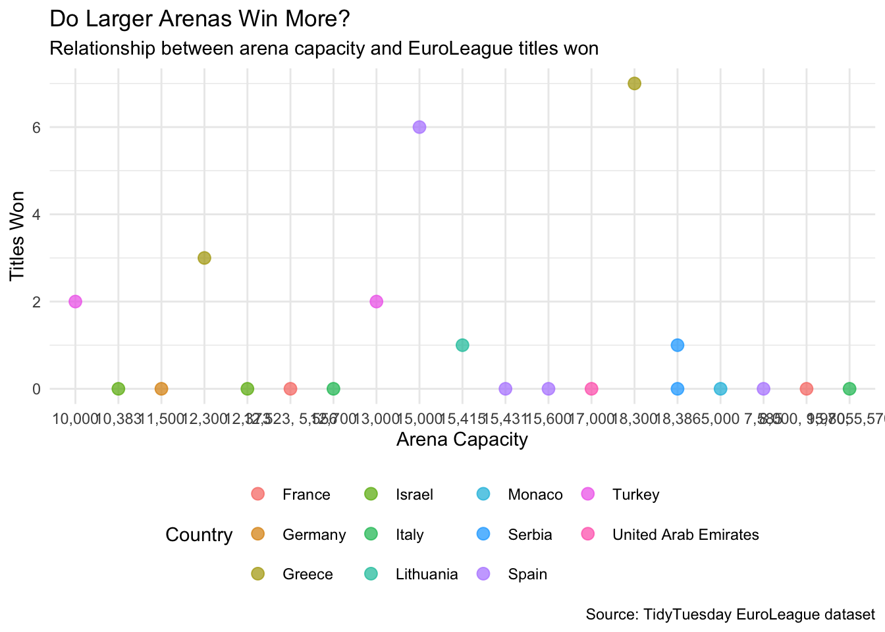
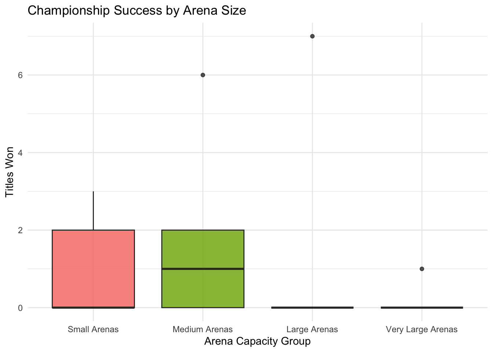
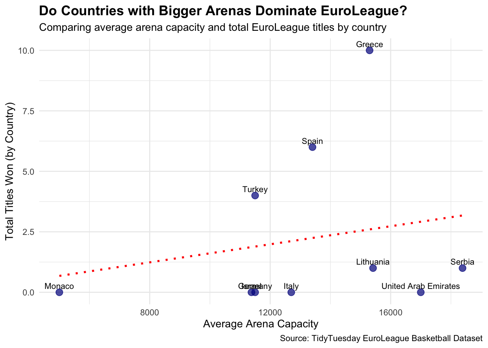

Homework 06
TidyTuesday Section (optional)
You can count work on this week’s TidyTuesday toward the exceptional work required for an A in the Homework component.
Explore the week’s TidyTuesday challenge. Develop a research question, then answer it through a short data story with effective visualization(s). Provide sufficient background for readers to grasp your narrative.
Research question: Do larger arenas correlate with more successful EuroLeague teams?
Visualizations
Code
ggplot(euroleague_basketball, aes(x = Capacity, y = Titles_Won, color = Country)) +
geom_point(size = 3, alpha = 0.7) +
geom_smooth(method = "lm", se = FALSE, color = "black", linetype = "dashed") +
labs(
title = "Do Larger Arenas Win More?",
subtitle = "Relationship between arena capacity and EuroLeague titles won",
x = "Arena Capacity",
y = "Titles Won",
caption = "Source: TidyTuesday EuroLeague dataset"
) +
theme_minimal() +
theme(legend.position = "bottom")
Code
euroleague_basketball %>%
mutate(Capacity_Group = ntile(Capacity, 4)) %>%
mutate(Capacity_Group = factor(
Capacity_Group,
labels = c("Small Arenas", "Medium Arenas", "Large Arenas", "Very Large Arenas")
)) %>%
ggplot(aes(x = Capacity_Group, y = Titles_Won, fill = Capacity_Group)) +
geom_boxplot(alpha = 0.8) +
labs(
title = "Championship Success by Arena Size",
x = "Arena Capacity Group",
y = "Titles Won"
) +
theme_minimal() +
theme(legend.position = "none")
Code
# Clean and prepare data
euroleague_basketball <- euroleague_basketball %>%
mutate(
# Remove commas and convert to numeric
Capacity = as.numeric(gsub(",", "", Capacity))
) %>%
# Remove rows where capacity couldn't be converted
filter(!is.na(Capacity))
# Summarize and plot
euroleague_basketball %>%
group_by(Country) %>%
summarize(
avg_capacity = mean(Capacity, na.rm = TRUE),
total_titles = sum(Titles_Won, na.rm = TRUE)
) %>%
ggplot(aes(x = avg_capacity, y = total_titles, label = Country)) +
geom_point(size = 3, color = "darkblue", alpha = 0.7) +
geom_text(vjust = -0.6, size = 3) +
geom_smooth(method = "lm", se = FALSE, color = "red", linetype = "dotted") +
labs(
title = "Do Countries with Bigger Arenas Dominate EuroLeague?",
subtitle = "Comparing average arena capacity and total EuroLeague titles by country",
x = "Average Arena Capacity",
y = "Total Titles Won (by Country)",
caption = "Source: TidyTuesday EuroLeague Basketball Dataset"
) +
theme_minimal() +
theme(
plot.title = element_text(face = "bold", size = 14),
plot.subtitle = element_text(size = 11),
legend.position = "none"
)
Interpretation
This analysis explored whether larger arenas are associated with greater success in EuroLeague basketball, using team- and country-level data on arena capacity, titles won, and Final Four appearances. Across the visualizations, a subtle but consistent pattern emerged: teams and countries with larger arenas tend to have more EuroLeague titles, though the relationship is far from absolute.
At the team level, the scatterplot showed a mild upward trend between arena capacity and championships, suggesting that larger facilities, and the resources and fanbases that come with them, may support success. Still, several smaller-arena teams have achieved remarkable results, underscoring that tradition, management, and player development can compensate for fewer structural advantages. When teams were grouped into quartiles by arena size, those in the largest capacity group generally displayed higher median title counts, reinforcing the idea that access to larger venues may reflect or enable greater competitive potential.
The country-level summary further strengthened this relationship. Nations like Spain and Turkey, which host multiple high-capacity arenas and invest heavily in basketball infrastructure, also dominate the EuroLeague historically. This broader view suggests that national support, resources, and fan engagement play an important role in shaping sustained success across clubs.
Taken together, these patterns reveal that arena size serves as a proxy for institutional and cultural investment in basketball. Larger arenas may not directly cause success, but they often signal the presence of strong financial backing, passionate fanbases, and stable organizations, all critical components of winning programs. In short, while big arenas often belong to big winners, the EuroLeague remains a space where history, strategy, and resilience allow even smaller clubs to thrive.